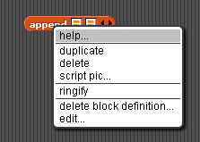
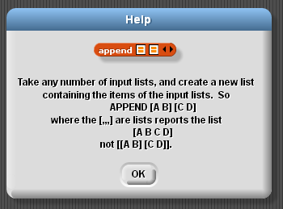

HOFs and recursion are two of the most important programming techniques that we have learned. One limitation in our use of recursion so far has been that each recursive function can only make a set number of recursive calls. As we will see in today's lab, we can make recursive functions more general using HOFs. This will allow us to make arbitrary numbers of recursive calls. As a result, we can carry out operations on structures more complicated than the factorials or the fibonacci numbers.
Framework for the activities in this lab can be found in this starter file.
Some reminders: if you don't know what a block does, try it! Remember that you can run any block by clicking on it in the scripts area. If you try a block and still can't figure out how it works, you can right-click on it and select "help...", which will give you a description of what the block does.
 